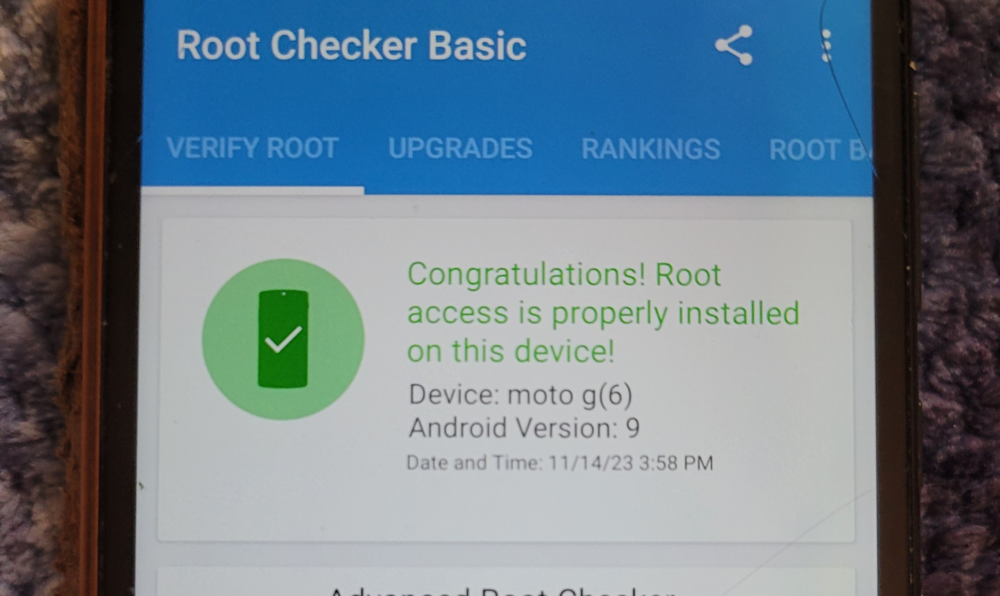

This is not a guide or recomendation it will void your warranty and possibly brick your device do this at your own risk find the guide I used here created by David Bombal

Overview:
This project introduced me into phone modding which I haven't done yet but now have the ability to do in the future.
It introduced me to various tools like: TWRP, Magisk, and ADB. ADB is utilized for USB debugging like flashing a new image
or pushing and pulling files to and or from an android device which was made easier with TWRP. Magisk was used to run the original
boot image through and root the device. TWRP was also used to remove encryption by flashing this zip file
(Found it while looking its not the same as the one in the video description) with TWRP.
You could also flash a custom image for booting, but I couldn't find any compatible images that would boot with this specific device (a Moto G6).
Goal:
The end goal of this project was to have a rooted Android phone running a kernel of Kali Nethunter and the Kali Nethunter suite.
In the end I couldn't get Kali Nethunter to run with all features enabled, because the chroot screen would start installing and then
come back with an error about storage size when there was ample amount of storage left. After looking through forums I found other people
with the same problem and no reported fixes.
Process:
I started with a fresh image of android 9 provided by the recovery and smart assistant application from Motorola found
here
(this is a great option for a backup stock image if you mess something up later, it could also be done by doing a hard reset and pulling the image from your device).
Then I had to remove the lock on the OEM bootloader which required getting a device specific key using ADB and Motorola's official website
here
Then I rebooted into fast boot and flashed recovery with the TWRP image for ease of use, I then pushed the remove encryption zip folder to an external sd card that was in the phone
and flashed it using TWRP. Then I pushed the stock boot image to the sd card, booted the phone, installed magisk from the official github
here
, ran the stock image through magisk and flashed it with magisk and rebooted. Finally I installed the root checker app to check if it was rooted successfully and it had been successfully rooted.